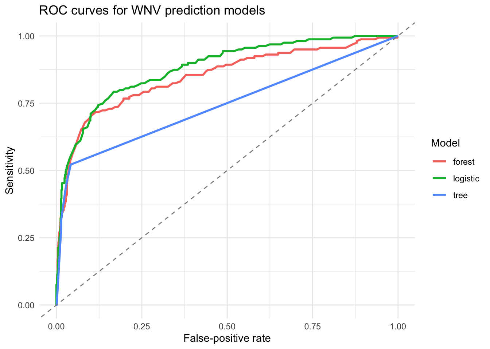

library(ggplot2)
theme_set(theme_minimal(base_size = 13))
training_data <- data.frame(
x = 1:8,
y = c(2.9, 3.4, 4.5, 5.0, 6.3, 6.7, 7.8, 8.1)
)
training_data x y
1 1 2.9
2 2 3.4
3 3 4.5
4 4 5.0
5 5 6.3
6 6 6.7
7 7 7.8
8 8 8.1A blended teaching workflow combining the mechanics of learning with a real WNV prediction problem
Perspectives:
The goal is to understand both the mathematical idea of learning and the practical pipeline used in applied work.
By the end, we should be able to answer four questions:
The central message is:
Learning means using data to determine a model’s parameters or structure. Optimisation is the procedure used to find useful values or structures according to an objective.
These terms are connected, but they are not interchangeable.
| Concept | Question | Example |
|---|---|---|
| Model | How are inputs turned into predictions? | \(\hat y = wx + b\) |
| Loss | How wrong are the predictions? | Mean squared error |
| Optimisation | How do we search for a better model? | Gradient descent |
| Learning | What changes because of the data? | Values of \(w\) and \(b\) |
The learning cycle is:
training data
|
v
make predictions with the current model
|
v
calculate the loss
|
v
use an optimisation rule to update the model
|
+-------------------- repeat for another epochOptimisation is therefore not an extra step after learning. In many models, it is the mechanism through which learning happens.
To make learning concrete, we begin with a tiny regression example.
library(ggplot2)
theme_set(theme_minimal(base_size = 13))
training_data <- data.frame(
x = 1:8,
y = c(2.9, 3.4, 4.5, 5.0, 6.3, 6.7, 7.8, 8.1)
)
training_data x y
1 1 2.9
2 2 3.4
3 3 4.5
4 4 5.0
5 5 6.3
6 6 6.7
7 7 7.8
8 8 8.1The model is:
\[ \hat y_i = wx_i + b, \]
where:
At the start, both parameters are set to zero.
w <- 0
b <- 0
training_data$initial_prediction <- w * training_data$x + b
training_data x y initial_prediction
1 1 2.9 0
2 2 3.4 0
3 3 4.5 0
4 4 5.0 0
5 5 6.3 0
6 6 6.7 0
7 7 7.8 0
8 8 8.1 0We need a way to measure the gap between the observed values and the predictions. We use mean squared error:
\[ \operatorname{MSE}(w,b) = \frac{1}{n}\sum_{i=1}^{n}\left(\hat y_i-y_i\right)^2. \]
mse <- function(observed, predicted) {
mean((predicted - observed)^2)
}
initial_loss <- mse(
observed = training_data$y,
predicted = training_data$initial_prediction
)
initial_loss[1] 34.53125A loss value tells us how well the current parameters fit the training data. It does not update the parameters by itself.
Example from the article: ml-in-epidemiology-article
Gradient descent asks: in which direction should each parameter move to reduce the loss?
For MSE, the gradients are:
\[ \frac{\partial \operatorname{MSE}}{\partial w} = \frac{2}{n}\sum_{i=1}^{n}(\hat y_i-y_i)x_i \]
and
\[ \frac{\partial \operatorname{MSE}}{\partial b} = \frac{2}{n}\sum_{i=1}^{n}(\hat y_i-y_i). \]
The update rule is:
\[ w_{t+1}=w_t-\eta\frac{\partial \operatorname{MSE}}{\partial w}, \qquad b_{t+1}=b_t-\eta\frac{\partial \operatorname{MSE}}{\partial b}, \]
where \(\eta\) is the learning rate.
This is batch gradient descent because every update uses all observations.
# Starting values
w <- 0
b <- 0
learning_rate <- 0.01
n_epochs <- 5000 # 1 epoch = 1 gradient update
training_loss_history <- data.frame(
epoch = 0:n_epochs,
loss = NA_real_,
w = NA_real_,
b = NA_real_
)
starting_prediction <- w * training_data$x + b
training_loss_history[1, ] <- c(
epoch = 0,
loss = mse(training_data$y, starting_prediction),
w = w,
b = b
)
for (epoch in 1:n_epochs) {
prediction <- w * training_data$x + b
error <- prediction - training_data$y
gradient_w <- mean(2 * error * training_data$x)
gradient_b <- mean(2 * error)
w <- w - learning_rate * gradient_w
b <- b - learning_rate * gradient_b
updated_prediction <- w * training_data$x + b
training_loss_history[epoch + 1, ] <- c(
epoch = epoch,
loss = mse(training_data$y, updated_prediction),
w = w,
b = b
)
}
learned_w <- w
learned_b <- b
data.frame(
parameter = c("intercept b", "slope w"),
learned_value = c(learned_b, learned_w)
) parameter learned_value
1 intercept b 2.0357143
2 slope w 0.7892857The code follows the repeated pattern:
predict -> calculate loss-related gradients -> update w and b -> repeatThis is the essence of the learning procedure:
source("app.R")
shinyApp(
ui = ui,
server = server
)
Base R can fit the same linear model directly.
lm_fit <- lm(y ~ x, data = training_data)
lm_coefficients <- coef(lm_fit)
coefficient_comparison <- data.frame(
parameter = c("intercept b", "slope w"),
gradient_descent = c(learned_b, learned_w),
lm = c(unname(lm_coefficients[1]), unname(lm_coefficients[2]))
)
coefficient_comparison$difference <-
coefficient_comparison$gradient_descent - coefficient_comparison$lm
coefficient_comparison parameter gradient_descent lm difference
1 intercept b 2.0357143 2.0357143 -3.780563e-09
2 slope w 0.7892857 0.7892857 6.724220e-10stopifnot(
abs(learned_b - unname(lm_coefficients[1])) < 0.001,
abs(learned_w - unname(lm_coefficients[2])) < 0.001,
tail(training_loss_history$loss, 1) < training_loss_history$loss[1]
)This shows that different numerical routes can produce the same fitted model.
The same general ideas appear in real public-health prediction tasks.
The central question is:
Can state-level surveillance information predict whether West Nile virus activity will be observed in the next four weeks?
The goal is not causation. The goal is to learn a pattern from historical data and check whether that pattern generalizes to new observations.
In supervised learning, the model learns a mapping from features \(x\) to an outcome \(y\):
\[ \hat{f}: X \rightarrow Y. \]
We now move from the abstract learning example to a real epidemiology workflow.
# Basic libraries
library(ggplot2)
library(dplyr)
library(data.table)
library(maps)
library(pROC)wnv_path <- "data/processed/wnv_state_week.csv"# Read the processed WNV dataset
wnv <- read.csv(wnv_path, stringsAsFactors = FALSE)
# Keep useful columns
wnv <- wnv %>%
filter(week >= 18, week <= 44) %>%
select(state, region, year, week,
cases_last4, active_weeks_last8,
activity_next_4w)
# Rename columns
names(wnv) <- c("state", "region", "year", "week",
"recent_cases", "recent_active_weeks", "outcome")
# Prepare the target for classification
wnv$region <- factor(wnv$region)
wnv$outcome <- factor(wnv$outcome, levels = c("no", "yes"))
# Explore the class distribution
table(wnv$outcome)
no yes
4936 572 round(prop.table(table(wnv$outcome)), 3)
no yes
0.896 0.104 We split the data into training and holdout test periods.
# Split into training and test data
train <- subset(wnv, year <= 2024)
test <- subset(wnv, year == 2025)This is a classic supervised learning setup: a model learns from historical state-week observations and predicts future activity.
model <- glm(
outcome ~ week + recent_cases + recent_active_weeks + region,
data = train,
family = binomial)
summary(model)
Call:
glm(formula = outcome ~ week + recent_cases + recent_active_weeks +
region, family = binomial, data = train)
Coefficients:
Estimate Std. Error z value Pr(>|z|)
(Intercept) -3.120715 0.282813 -11.035 < 2e-16 ***
week 0.009273 0.007968 1.164 0.244515
recent_cases 0.278467 0.066101 4.213 2.52e-05 ***
recent_active_weeks 0.478830 0.080663 5.936 2.92e-09 ***
regionNortheast -0.311733 0.224622 -1.388 0.165195
regionSouth 0.614242 0.161219 3.810 0.000139 ***
regionWest 0.107259 0.181644 0.590 0.554862
---
Signif. codes: 0 '***' 0.001 '**' 0.01 '*' 0.05 '.' 0.1 ' ' 1
(Dispersion parameter for binomial family taken to be 1)
Null deviance: 2685.4 on 4130 degrees of freedom
Residual deviance: 2209.2 on 4124 degrees of freedom
AIC: 2223.2
Number of Fisher Scoring iterations: 6# Predict probabilities on unseen data
prob_yes <- predict(model, newdata = test, type = "response")
# Convert probabilities to class labels
predicted <- ifelse(prob_yes >= 0.5, "yes", "no")
predicted <- factor(predicted, levels = c("no", "yes"))
# Compare predictions with reality
confusion <- table(Actual = test$outcome, Predicted = predicted)
confusion Predicted
Actual no yes
no 1206 12
yes 112 47accuracy <- sum(diag(confusion)) / sum(confusion)
cat("Accuracy:", round(accuracy, 3), "\n")Accuracy: 0.91 This workflow shows the classic machine-learning cycle:
The more modern workflow compares multiple learners and uses probabilities directly.
library(data.table)
library(mlr3)
library(mlr3learners)wnv_ml <- fread(wnv_path) |> # Similar to read.csv() and read.delim()
filter(week >= 18, week <= 44) |>
select(state, region, year, week,
cases_lag1, cases_lag2, cases_lag4,
cases_last4, cases_last8, active_weeks_last8,
week_sin, week_cos, activity_next_4w) |>
mutate(
region = factor(region,
levels = c("Northeast", "South",
"North Central", "West")),
activity_next_4w = factor(activity_next_4w,
levels = c("no", "yes")))
feature_columns <- c(
"region",
"cases_lag1",
"cases_lag2",
"cases_lag4",
"cases_last4",
"cases_last8",
"active_weeks_last8",
"week_sin",
"week_cos"
)
train_data <- wnv_ml |> filter(year <= 2024)
test_data <- wnv_ml |> filter(year == 2025)
train_task <- TaskClassif$new(
id = "wnv-train",
backend = train_data[, c("activity_next_4w", feature_columns),
with = FALSE],
target = "activity_next_4w",
positive = "yes")
test_task <- TaskClassif$new(
id = "wnv-test",
backend = test_data[, c("activity_next_4w", feature_columns),
with = FALSE],
target = "activity_next_4w",
positive = "yes")
learner_logistic <- lrn(
"classif.log_reg",
id = "Logistic regression",
predict_type = "prob")
learner_tree <- lrn(
"classif.rpart",
id = "Decision tree",
predict_type = "prob",
cp = 0.01,
maxdepth = 5,
minsplit = 40,
xval = 0)
learner_forest <- lrn(
"classif.ranger",
id = "Random forest",
predict_type = "prob",
num.trees = 500,
mtry = 3,
min.node.size = 10,
importance = "permutation",
num.threads = 1,
seed = 20260927)
learners <- list(
logistic = learner_logistic,
tree = learner_tree,
forest = learner_forest)
fitted <- lapply(learners, function(l) {
l$clone(deep = TRUE)$train(train_task)
})
holdout_predictions <- rbindlist(lapply(names(fitted), function(model_name) {
pred <- fitted[[model_name]]$predict(test_task)
data.table(
model = model_name,
state = test_data$state,
year = test_data$year,
week = test_data$week,
truth = pred$truth,
probability = pred$prob[, "yes"]
)
}))
summarise_model <- function(df, threshold = 0.5) {
response <- ifelse(df$probability >= threshold, "yes", "no")
response <- factor(response, levels = c("no", "yes"))
truth <- factor(df$truth, levels = c("no", "yes"))
tp <- sum(truth == "yes" & response == "yes")
fn <- sum(truth == "yes" & response == "no")
tn <- sum(truth == "no" & response == "no")
fp <- sum(truth == "no" & response == "yes")
sensitivity <- tp / (tp + fn)
specificity <- tn / (tn + fp)
accuracy <- (tp + tn) / length(truth)
bacc <- mean(c(sensitivity, specificity))
data.table(
threshold = threshold,
sensitivity = sensitivity,
specificity = specificity,
accuracy = accuracy,
balanced_accuracy = bacc,
tp = tp,
fp = fp,
tn = tn,
fn = fn
)
}
summary_table <- rbindlist(lapply(split(holdout_predictions, by = "model", keep.by = TRUE), function(x) {
summarise_model(x, threshold = 0.5)
}), idcol = "model")
summary_table model threshold sensitivity specificity accuracy balanced_accuracy tp
<char> <num> <num> <num> <num> <num> <int>
1: logistic 0.5 0.2893082 0.9876847 0.9070443 0.6384965 46
2: tree 0.5 0.3144654 0.9860427 0.9084967 0.6502541 50
3: forest 0.5 0.3459119 0.9827586 0.9092229 0.6643353 55
fp tn fn
<int> <int> <int>
1: 15 1203 113
2: 17 1201 109
3: 21 1197 104This is framing of supervised learning and model evaluation: compare models, use probabilities, and evaluate generalization on unseen data.
library(pROC)roc_data <- rbindlist(lapply(unique(holdout_predictions$model),
function(m) {
pred <- holdout_predictions[model == m]
obj <- roc(pred$truth, pred$probability,
levels = c("no", "yes"), quiet = TRUE)
data.table(
model = m,
fpr = rev(obj$specificities),
tpr = rev(obj$sensitivities)
)
}))
ggplot(roc_data, aes(x = 1 - fpr, y = tpr, colour = model)) +
geom_line(linewidth = 1) +
geom_abline(intercept = 0, slope = 1,
linetype = 2, colour = "grey55") +
labs(
title = "ROC curves for WNV prediction models",
x = "False-positive rate",
y = "Sensitivity",
colour = "Model"
) +
theme_minimal()
confusion_data <- rbindlist(lapply(unique(holdout_predictions$model), function(m) {
pred <- holdout_predictions[model == m]
pred$response <- ifelse(pred$probability >= 0.5, "yes", "no")
tab <- table(Actual = pred$truth, Predicted = pred$response)
data.table(
model = m,
truth = rep(c("no", "yes"), each = 2),
response = rep(c("no", "yes"), times = 2),
count = as.vector(tab)
)
}))
ggplot(confusion_data, aes(response, truth, fill = count)) +
geom_tile(color = "white") +
geom_text(aes(label = count), fontface = "bold") +
scale_fill_gradient(low = "#F3E8FF", high = "#6D28D9") +
facet_wrap(~ model) +
labs(
title = "Confusion matrices on the 2025 holdout set",
x = "Predicted class",
y = "Observed class",
fill = "Count"
) +
theme_minimal()
state_predictions <- holdout_predictions |>
group_by(state) |>
summarise(predicted_probability = mean(probability), .groups = "drop")
state_map <- map_data("state")
state_map <- state_map |>
rename(state = region) |>
left_join(
state_predictions |> mutate(state = tolower(state)),
by = "state"
)
ggplot(state_map, aes(long, lat, group = group, fill = predicted_probability)) +
geom_polygon(color = "white", linewidth = 0.2) +
coord_map() +
scale_fill_gradient2(
low = "#FDE68A",
mid = "#F59E0B",
high = "#B91C1C",
midpoint = median(state_map$predicted_probability, na.rm = TRUE)
) +
labs(
title = "Predicted WNV activity probability by state",
x = "",
y = "",
fill = "Predicted prob."
) +
theme_minimal() +
theme(
panel.grid = element_blank(),
axis.text = element_blank(),
axis.ticks = element_blank()
)
The point of the workflow is not only to fit a model but to explain how machine learning works in practice.
A typical sequence is:
This is the bridge between the abstract learning cycle and applied epidemiology.
The conceptual notebook shows that learning is about using data to update model parameters or structure according to a loss function and an optimization scheme.
The epidemiology workflow shows how the same logic is used in a real decision problem: predict whether WNV activity will be observed in future weeks using information available at the current time.
The same essential pattern appears in both:
data -> model -> predictions -> loss -> update -> repeat -> evaluationThat is the heart of machine learning.